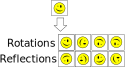
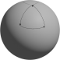
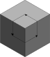
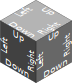

Rotation
For many games and other usages of grids, you never need to worry about rotating things. In chess, for example, the units move in fixed patterns. Or for a height map, you just need a single number per cell.
But in other usages, the facing direction of objects matters, or you wish to re-use the same tile image in a different orientation. For these, sooner or later, you'll need to worry about rotations.
Rotations are complicated to understand fully, and you are recommended to avoid them until you are comfortable with cells, cell types and grids, as described in the key concepts.
What is a rotation?
In Sylves, a CellRotation describes any rotation of a single cell that maps the cell onto itself.
For example, for a square cell, there are 4 rotations, corresponding to rotating by 0, 90, 180 or 270 degrees. Rotating by, say, 45 degrees is not a rotation, as that would transform a square to a diamond, not back to the original square.
There's also 4 reflections that map a square onto itself. Reflections are treated the same as rotations in Sylves, and usually we'll use rotation to refer to both of them.

Transformations that map something back onto itself are known as symmetries in mathematics.
CellRotation is actually an empty enumeration - the actual values are specific to the cell type in question. For example, SquareRotation supplies values like SquareRotation.RotateCW and SquareRotation.ReflectX as values.
If you want to work with rotations without using a specific type, you can use use the appropriate ICellType implementation, such as SquareCellType.Instance, which is detailed more in the key concepts.
Rotations only consider a single cell at a time. For rotating an entire grid, see Grid Symmetry or TransformModifier.
2d/3d rotations
2d rotations are the easiest to consider. If a polygon has n sides, then there are n rotations, each a multiple of 360 / n degrees, which are stored as positive integers in counterclockwise order.
There's also n possible reflections, which are stored as negative numbers.
So a 2d rotation will have -n <= (int)rotation < n.
SquareCellType, HexCellType and NGonCellType all work this way.
Sylves also supports CubeCellType, which uses CubeRotation that supports all 48 rotations / reflections of a cube.
Basic usage
Most of the key methods of rotations are on ICellType, as rotations only consider a single cell.
GetIdentity
Gets the rotation that does nothing.
GetRotations
Gets all rotations (and optionally reflections) of a cell.
Invert
Finds the rotation that undoes the given rotation.
RotateCCW/RotateCW
Rotate left/right (2d cell types only)
Then there are methods for applying the rotation:
Rotate
Rotate a CellDir by a given CellRotation.
Multiply
Compose two rotations together into a single one.
GetMatrix
Get a rotation as a matrix, so you can transform vectors.
Note
If you use specific classes like SquareRotation, they usually have the * operator overloaded as a shorthand for applying rotations, and many other convenience methods.
TryMove and Rotation
A classic riddle goes: "A bear travels one mile south, one mile east, then one mile north and finds itself back at home. What color is the bear?".
The answer of course, is white - the only place on earth where this is possible is near the north pole. But it does illustrate an important about motion - when you travel on curved or distored surfaces, things work differently. Our bear took two 90 degree turns, but somehow ended up returning home at an angle.

The same issue comes up in some of the more complicated grids of Sylves. Let's consider a grid that uses the faces of a cube - it has 6 faces, each a square. The exact same problem shows up:

If you follow this path, you end up rotated 90 degrees from where you started! This is the link between motion on a grid, and rotation.
In order to deal with this sort of situation, when you call IGrid.TryMove, in addition to returning the tile you move to, you get inverseDir and connection, which explain if any rotation is happening.
Let's ignore connection for now, as it is irrelevant to the majority of grids. inverseDir returns the CellDir needed to move back to the original cell. Why is inverseDir so important?
Well, for the basic grids, like SquareGrid, HexGrid, CubeGrid, inverseDir is always the obvious choice. If you move left, then inverseDir will be right. Same for up/down, etc.
On our 3d cube example however, it's simply not possible for the directions to all the consistent like that. Here's one way we could label the cube.
.
When we TryMove from the top face, in direction SquareDir.Down, we end up on the left face. And inverseDir will be SquareDir.Up.
Then, we can TryMove from the left face to the right one, via SquareDir.Right. The inverseDir would be SquareDir.Left.
But moving from the right face to the top one, via SquareDir.Up, we'd find that the inverseDir would be SquareDir.Right! That is telling us that the frame of reference has rotated as we moved. And we could even measure that rotation:
var actualDirection = (CellDir)SquareDir.Right;
var expectedDirection = SquareCellType.Instance.Invert((CellDir)SquareDir.Up).Value;
SquareCellType.Instance.TryGetRotation(actualDirection, expectedDirection, new Connection(), out var rotation);
// Now rotation == SquareRotation.RotateCW
This general concept is called rotation maps and is covered in more details on my blog.
Connection
In addition to inverseDir, TryMove also supplies a Connection object. This is used for describing relationships between tiles even more complex than the above example.
It's only used in very rare circumstances. For example imagine a grid on a Möbius strip.

If you travel all the way around such a grid, you'll find yourself on the same cell, facing the same direction, but left and right have been flipped. Connection.Mirror records whether to flip everything when you travel from one cell to another. To make the Möbius grid work, you must insert a dividing line that causes to mirror when you travel through it.
Similarly Connection.Rotation is used for 3d grids, and notes if you need to change your roll angle when moving cells.